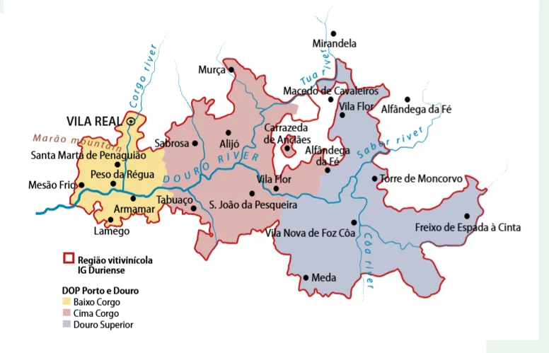
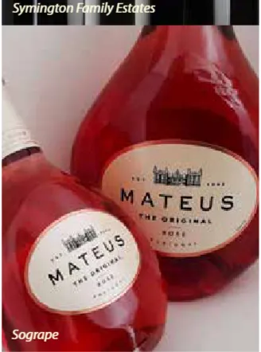

Chapter 4 · The Portuguese wine regions
Douro and Porto Wine Region
Key figures (2022)
Viticultural area: 43,466 ha
Total Production: 145,708,300 litres
History
The beginnings of viticulture must have had their origins in the Chalcolithic Period, but the earliest evidence from archaeological excavations revealed Roman wine presses with fixed covers of the type with press weights and two crossed axes (Foz-Côa, Murça, Meda, etc.). The Douro is the region with the earliest viticultural demarcations defined in the Modern Age. In 1756, the Marquis of Pombal set the boundaries of the wine-producing areas of the Douro, which have remained practically unchanged to this day, although they have since been geographically subdivided into three regions, namely the Baixo Corgo, Alto Corgo and Douro Superior. Port wine had already gained significant momentum in the 15th century because of English commercial interest. The secret of success was strict control by a kind of “special monitoring force” established to ensure quality and prevent fraud. By means of an incentive scheme, this monitoring force regulated the adjustment of production quotas to meet market demand that were based on analysis and evaluation of various production criteria (such as location of vineyard, slope, microclimate, varieties, soil type, six different yield classifications, etc.) in order to stimulate the interest of producers in making distinctions when evaluating the quality of their vineyards and wines. With the recent, significant increase in the prestige accorded to wine, it has been possible to coordinate policies channelled through the offices of the Instituto do Vinho de Douro e do Porto, I.P. (Douro and Port Wine Institute). The University of Trás-os-Montes e Alto Douro”, the association ADVID and as well as other organisations formed the basis of a continuing “rationale of joint action” at a high level of scientific research.


Terroir
Climate Köppen-Geiger classification:
Csa. Humid temperate climate with a dry season in summer.
MCC System indices (Tonietto & Carbonneau, 2004): heliothermal index (HI):+ 2, cool night index (FI): +1, dryness index (DI): +1. There is an extreme diversity of microclimates and topoclimates. Late frosts are infrequent and there is a risk of heavy rain and hail in summer. The climate is determined by the mountainous terrain. Slopes facing away from the sun have different climatic values to slopes facing away from the sun. As a result, there are two different types of wine: Port (fortified wine) and DOC Douro wine. The mountains that separate the Douro from Vinho Verde cancel out the influence of the sea winds and give rise to a particular climate. Warm, but with cold nights and moderate dryness. The climatic conditions are typically Mediterranean, varying according to the location of the vineyard on slopes on the banks of rivers and streams.
Rainfall: > 600 mm
Geology: Because of its impressive geological structure associated with human cultivation of the vine, the region incorporating the valleys of Alto Douro has been recognized as a World Heritage site by UNESCO. The region is characterized by steep slopes, often over 30o, and steeply sloping valleys, often over 200 meters in depth. The reliefs in the north are dominated by a surface culminating at 900–1,200 meters. The lithological composition. varies according to the geological structure, from gneisses, granites, quartzites, massifs, schists and arboriferous schists interspersed with gravelly schists and fluviomarine zones. The region is divided into three naturally distinct subregions (Baixa Corgo, Cima Corgo and Douro Superior), not only due to climatic factors but also socio-economically, the economic utilization of natural resources and the activities carried out there. In the past, it was only in the Alto Douro that vine-growing was widespread, an area that is now known as subregions Baixo Corgo and Cima Corgo.
Rainfall: Varies between 1,200 mm (Fontes) and 380 mm (Barca d’Alva), with the amount of precipitation decreasing from Barqueiros until the border with Spain.
Soil science: The Douro is based on different types of metamorphic schists. Granite is rarely encountered, and when it is, the soils are considered of too poor a quality for the “incentive” normally given for the production of Port wine Soils where the influence of human activity is very marked, by deep mobilization works with forced disintegration of the rock and consequent deepening of the profile and changes to the original morphology. In these soils, the profile is made up of an Ap horizon (anthropic) with a thickness that varies according to the depth of scarifying (1.00 m to 1.30 m) and the location of the terrace, which is generally quite stony, followed by the rock (R); usually the Ap horizon is subdivided into two layers, the first, 25 cm deep, resulting from the annual grains of the vineyard and the second from there to the rock. Another group consists of units: Leptosols – made up of soils whose main characteristic is the presence of hard rock at a depth of less than 30 cm, distributed in three subunits - dystric lithics (acidic); umbric (acidic and rich in organic matter, in the higher parts), and, to a lesser extent, eutric (slightly acidic). Cambisols – soils thicker than 30 cm: Fluvisols – These are soils derived from recent alluvial deposits, located on sediment deposition surfaces. The latter occupy a small area only. The acidic pH levels of most of the soils (with the exception of Douro Superior) and the steeply inclined vineyard slopes require human intervention for proper cultivation. The abundance of water, together with other edaphoclimatic conditions produces constant stress on the vine itself, thus guaranteeing the quality of the wines of the region. Vineyard elevation ranges from 70 to 700 metres with different exposures that determine choice of grape varieties.
Types of wine produced
Porto DO wines (VLQPRD): White and red, of different styles: Ruby, Tawny, White, Vintage, LBV, year of harvest, aged (10/20/30/40 years), and Reserva.
Duriense IG wine or Duriense regional do Porto, I.P. (Douro and Port Wine
wine: Red, white, rosé.
Douro DO wines (VQPRD): Red, white, rosé.
Douro DO sparkling wines (VEQPRD)
Douro DO liqueur wines (VLQPRD) “Moscatel do Douro”
Aguardente de Vinho (brandy from wine spirit) The Instituto dos Vinhos do Douro e do Porto, I.P. – IVDP (Douro and Port Wine Institute) is the certification authority for DO and IG vitivinicultural products in this region.
Regional contacts
Technical information: IVDP, I.P. – Instituto dos Vinhos do Douro e do Porto, I.P. (Douro and Port Wine Institute), Rua dos Camilos, 90, 5050-272 PESO DA RÉGUA, Tel.: 254 320 130, Fax: 254 320 149
Website: www.ivdp.pt, e-mail: ivdp@ivdp.pt Cultural information on the wine of
the region: Confraria Enófila do Vinho do Porto (Confraternity of Port Wine Oenophilists), Rua Dr. António Granjo, 207, 4400-124 VILA NOVA DA GAIA, Tel. 223 745 525,
Website: confrariavinhodoporto.com. Institutions of higher learning and
viticultural research: Universidade de Trás-os-Montes e Alto Douro UTAD (University of Trás-os-Montes e Alto Douro), Quinta dos Prados 5000-262 VILA REAL, Tel.: 259 350 000, www.utad.pt; Escola Superior Agrária de Bragança (Polytechnic Institute of Bragança - Agricultural School), Campus de Santa Apolónia (Santa Apolónia Campus) – Apartado 1172, 5301- 855 BRAGANÇA;
Telephone: (+351) 273 303 200 http://esa.ipb.pt; Confraria dos Enófilos da Região Demarcada do Douro (Confraternity of Oenophilists of the Douro Demarcated Region), Praça Renato Aguiar, Edif. S. Tomé, r/C esq. 5050-243 PESO DA RÉGUA, Tel.: 254 321 323
Certification authority: IVDP, I.P. – Instituto dos Vinhos do Douro e
Institute) Rua dos Camilos, 90, 5050-272 PESO DA RÉGUA, Tel.: 254 320 130, Fax: 254 320 149
Website: www.ivdp.pt, e-mail: ivdp@ivdp.pt; Porto, Rua Ferreira Borges, 27, 4050-253 PORTO
Tel: +351 222 071 600;
Enotourism information:
Porto Wine Routes, Largo da Estação 5050-237 PESO DA RÉGUA, Tel 254 324 774, site: www.rvp.pt
Producer and bottler information:
http://www.ivv.min agricultura.pt/ np4/1736.html, Yearbook 2011, pages 130–140.
Wine Route website: www.rvp.pt
Denomination:
IGP Duriense (regional wine)
Legal basis: Decreto-Lei 212/2004, Decreto-Lei n.º 173/2009; Reg. (CE) 1234/2003 (applicable to all varieties mentioned below).
Varieties authorised for IGP Duriense
Legal basis: Decree-Law n.º 173/2009 of 3 August, Ministerial Order n.º 383/2017 of 20 December and Decree-Law n.º 212/2004 of 23 August.
Red wines: Alfrocheiro (Tinta Bastardinha), Alicante Bouschet, Alvarelhão (Brancelho), Alvarelhão Ceitão, Aramon, Baga, Barreto, Bastardo, Carignan, Casculho, Castelã, Castelão, Cidadelhe, Cinsault, Concieira, Cornifesto, Donzelinho Tinto, Engomada, Espadeiro, Goncalo Pires, Grand Noir, Grangeal, Jaen (Mencia), Lourela, Malandra, Malvasia Preta, Marufo, Melra, Mondet, Moreto, Mourisco de Semente, Nevoeira, Patorra, Petit-Bouschet, Pinot Noir, Português Azul (Blauer Portugieser), Preto Marinho, Roseira, Rufete (Tinta-Pinheira), Santareno, Sevilhão, Sousão (Vinhão), Tinta Aguiar, Tinta Amarela (Trincadeira, Trincadeira Preta), Tinta Barroca, Tinta Caiada (Pau Ferro, Tinta Lameira), Tinta Carvalha, Tinta da Barca, Tinta Fontes, Tinta Francisca, Tinta Grossa (Carrega Tinto), Tinta Martins, Tinta Mesquita, Tinta Penajoia, Tinta Pereira, Tinta Pomar, Tinta Roriz (Aragonez, Tempranillo), Tinta Tabuaço, Tinto Cão, Tinto Sem Nome, Touriga Fêmea, Touriga Franca, Touriga Nacional, Valdosa and Varejoa.
White wines: Alvarinho, Arinto (Pedernã), Arinto-do-Douro (Dorinto), Avesso, Batoca (Alvaraça), Bical (Borrado das Moscas), Branco Especial, Branco Gouvães (Alvarelhão Branco), Branco Guimarães, Branco Valente, Caramela, Carrega Branco, Cercial, Chardonnay, Chasselas, Côdega (Roupeiro, Síria), Côdega do Larinho, Diagalves Donzelinho Branco, Encruzado, Estreito Macio, Fernão Pires (Maria Gomes), Folgasão, Dona Branca (Folha de Figueira), Gouveio, Gouveio Estimado, Gouveio Real, Jampal, Malvasia Fina, Malvasia Parda (Farinheira), Malvasia Rei, Moscadet, Moscatel Galego Branco, Mourisco Branco, Pé Comprido, Pinot Blanc, Praça, Rabigato, Rabigato Moreno, Rabo de Ovelha, Ratinho, Samarrinho (Budelho), Sarigo, Semillon, Sercial (Esgana Cão), Tamarez (Molinha), Verdelho, Verdial Branco, Viosinho and Vital (Malvasia Corada).
Prestigious wineries
in the region:
The most economically and politically important factor is the network of wine companies in the Douro region. Because of the multitude of agents, only a few examples have been noted here.
Principal wine estates Prominent DOC Douro wines estates include Quinta da Leda, owned by the Casa Ferreirinha (Sogrape), Quinta D. Maria and Quinta do Portal.


Prestigious wineries in the region:
Sogrape is Portugal’s largest wine group (the Guedes family) with overseas business interests.Today, it produces wine in the country’s main wine-growing regions and abroad, namely in Argentina, Chile, New Zealand and Spain; with 1,600 hectares of vineyards, 19 wineries and 25 wine estates. Globally, Sogrape sells more than 150 bottles per minute.Its Mateus Rosé brand (>20 million bottles) is one of the world’s best-selling wines.
Symington Family Estates is one of the world’s major producers of premium port, the leading vineyard owner in the Douro Valley and one of the top Portuguese wine producers. It owns prominent Port winehouses: Graham’s, Dow’s, Warre’s, and Cockburn’s. Leading vineyard owners in the Douro Valley with 26 different estates covering a total of 2,255 ha of which 1,024 ha are planted to vineyards. Its better-known wine estates include Quinta do Bomfim, Quinta dos Malvedos, Quinta da Cavadinha, Quinta do Vesuvio, Quinta Roriz, Quinta do Ataíde and Quinta dos Canais.
Real Companhia Velha. The company has been run by the Silva Reis family and owns five quintas in the Douro Valley. Quinta and Vineyard Bottlers Vinhos S.A. Sogevinus Fine Wines, S.A.
Sociedade dos Vinhos Borges, S.A. Adriano Ramos Pinto – Vinhos, S.A.
The Douro Boys is the name given collectively to five winemaker friends – and owners of the Quinta Vale D. Maria (Van Zellers and Co.), Quinta do Vallado, Quinta do Crasto, Quinta do Vale Meão and Niepoort wine estates – which together cover.